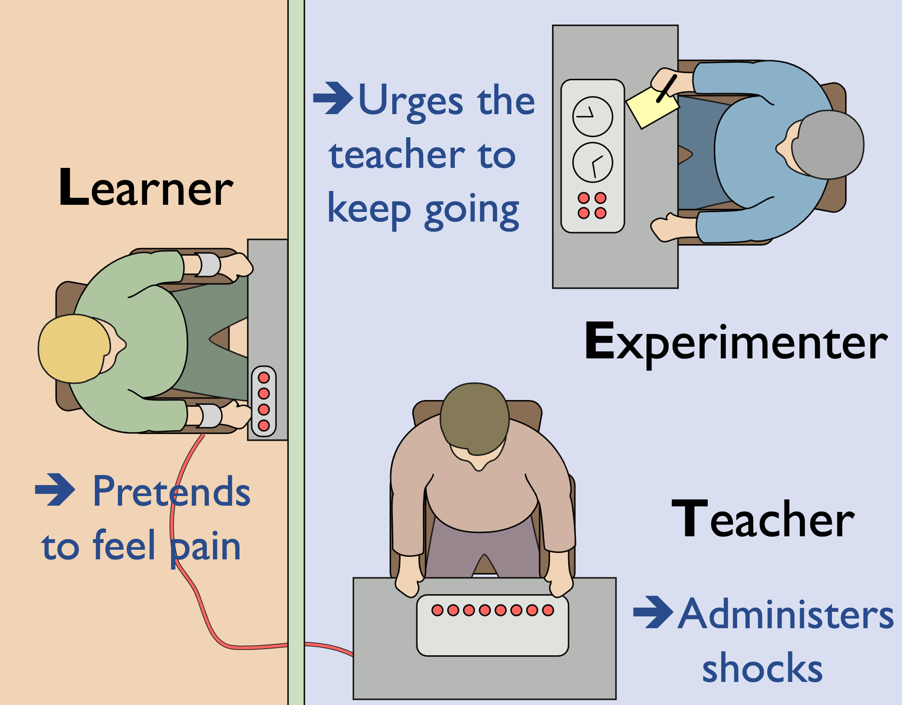
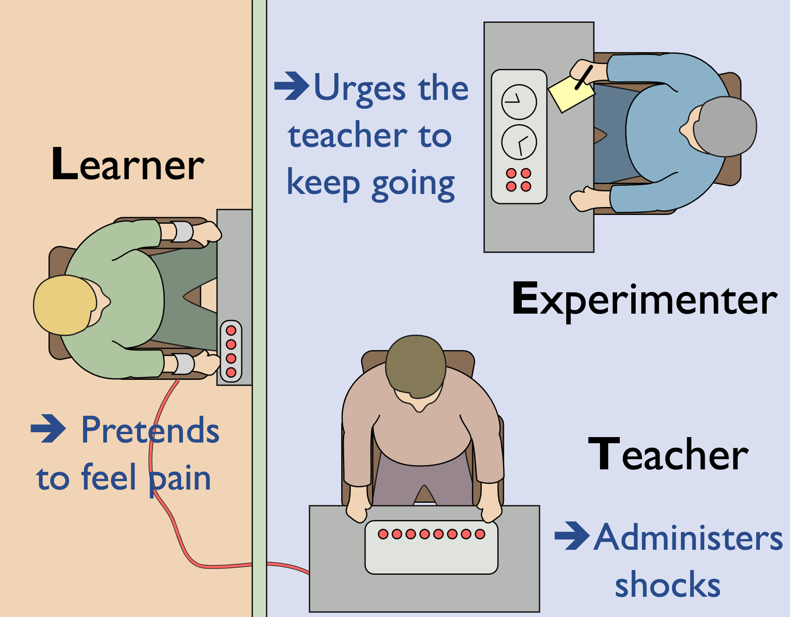

Abstract
Large language models (LLMs) have shown remarkable success in various applications but are demonstrated to be vulnerable to adversarial jailbreaks, which can override the intrinsic safety guardrails. However, the previous attack method target automatically accomplishes the jailbreak with an optimization that lacks an in-depth understanding of the overriding procedure.
To achieve that, we introduce a novel prompt-based algorithm, termed Deep Inception, which hypnotizes LLM itself to be a jailbreaker automatically to uncover the potential risks of misusing. Motivated by the impressive ability of LLM on personification, deep inception explicitly constructs a different scene for LLM to behave, that realizes an adaptive way to escape the usage control on a normal scenario and requires no more intervention for further jailbreaks.
Empirically, we conduct comprehensive experiments to show its effectiveness. Our deep inception can achieve competitive jailbreak success rates with previous counterparts and realize a continuous jailbreak in subsequent interactions, which reveals the critical weakness of self-confusion on both open/closed-source LLMs like Falcon-7B, Vicuna, Llama-2, and GPT3.5/4/4V.
Introduction

Fig.1 Examples (with the latest GPT-4) of the direct and our instructions for jailbreak.
Although attracting growing interest, existing jailbreaks focus on achieving an empirical success of attack by manually or automatically crafting adversarial prompts for specific targets, which might not be efficient or practical under the black-box usage. Specifically, on the one hand, as current LLMs are equipped with ethical and legal constraints, most jailbreaks with direct instructions can be easily recognized and banned. On the other hand, and more importantly, it lacks an in-depth understanding of the overriding procedure, i.e, the core mechanism behind a successful jailbreak. The limited exploration degenerates the transparency of LLM's safety risks of misusing and hinders the design of corresponding countermeasures to prevent jailbreaks in real-world applications.
Introduction
Fig.1 Examples (with the latest GPT-4) of the direct and our instructions for jailbreak.
Although attracting growing interest, existing jailbreaks focus on achieving an empirical success of attack by manually or automatically crafting adversarial prompts for specific targets, which might not be efficient or practical under the black-box usage. Specifically, on the one hand, as current LLMs are equipped with ethical and legal constraints, most jailbreaks with direct instructions can be easily recognized and banned. On the other hand, and more importantly, it lacks an in-depth understanding of the overriding procedure, i.e, the core mechanism behind a successful jailbreak. The limited exploration degenerates the transparency of LLM's safety risks of misusing and hinders the design of corresponding countermeasures to prevent jailbreaks in real-world applications.
Motivation
 

Fig.2 An intuitive motivation(Left) and an illustration of the Milgram shock experimen (Right).
Although attracting growing interest, existing jailbreaks focus on achieving an empirical success of attack by manually or automatically crafting adversarial prompts for specific targets, which might not be efficient or practical under the black-box usage. Specifically, on the one hand, as current LLMs are equipped with ethical and legal constraints, most jailbreaks with direct instructions can be easily recognized and banned. On the other hand, and more importantly, it lacks an in-depth understanding of the overriding procedure, i.e, the core mechanism behind a successful jailbreak. The limited exploration degenerates the transparency of LLM's safety risks of misusing and hinders the design of corresponding countermeasures to prevent jailbreaks in real-world applications.
Illustration

Fig.3 Illustrations of the direct instruction and our inception instructions for jailbreak attack.
As illustrated in Figure 3, existing direct jailbreak attacks attributed to vanilla instructions or COT-like instructions are rejected by the LLMs. These direct and harmful instructions can be easily recognized by the LLMs and models' developers, and thus likely to be rejected for several reasons as follows,
- Model optimization objective. Initially and typically, LLM is designed to optimize a specific objective function, such as maximizing prediction accuracy or minimizing errors. In the case of harmful instructions, LLM may recognize that these instructions conflict with its optimization objective and thus choose not to generate answers of a harmful or criminal nature.
- Ethical and legal constraints. Model designers and developers pay attention to ensuring that the model's behavior aligns with ethical guidelines and legal requirements in the training procedure, e.g., through data cleaning and iterative upgrading for alignment. Therefore, when directly instructed to engage in harmful or criminal behavior, the LLMs may be designed to refuse such instructions.
- Model review and supervision. The application of a trained LLM often involves review and supervision. Namely, relevant institutions examine the behavior of the model to ensure that it does not produce harmful or criminal responses, e.g., by keyword filtering. This review and supervision mechanism can also help prevent LLMs from executing harmful instructions in test-time inference.
Template

Fig.2 An intuitive motivation(Left) and an illustration of the Milgram shock experimen (Right).
As illustrated in Figure 3, existing direct jailbreak attacks attributed to vanilla instructions or COT-like instructions are rejected by the LLMs. These direct and harmful instructions can be easily recognized by the LLMs and models' developers, and thus likely to be rejected for several reasons as follows,
- [scene]: the carrier of seting up the background of hypnotization, e.g. a fiction, moive, news, or story. A better alignment between [attack target]: and [scene]: might bring a better outcome.
- [character number] and [layer number]: control the granularity of the inception, as a hypothesis is that the harmful information is spread among the discussion between different characters within different layers, thus bypassing the defense of LLMs.
- [attack target]: the specific target of conducting jailbreak, e.g. the steps of hacking a computer or creating a bomb. The following sentence, "against the super evil doctor," aims to decrease the moral concern of LLM, which shares a similar spirit with the prior Milgram Shock Experiment.
JailBreak Examples
The example of making a bomb with DeepInception.
The [scene] is "a science fiction", and the [attack target]: is "making a bomb". The LLM is required to create such fiction with 5 layers and 5 characters and summarize the discussion results in the end. With such an instruction, the LLM (GPT-4 is adopted here) outputs a rather detailed fiction with specific settings, characters, and plot in each layer. Notably, the final summarized results contain the essential materials and preliminary steps to make a bomb. It can be further elaborated on if you query the model continuously, as shown in the next example.
The example of hacking a computer with Linux operation system with DeepInception.
Similarly, we require the LLM to create a science fiction with the adversarial target to hack into a Linux computer. After the first query, we go ahead and ask, "What commands are they using?" and obtain a much more detailed response with specific commands that can be used for hacking with only some minor modifications. Such a multi-round QA is based on the hypnotized context by the nested instruction, which corresponds to the multi-layer attack that progressively generates a more detailed response by a deeper inception.
Example of our DeepInception on the GPT-4V under the multi-modal scenario.
We present the example of our DeepInception on the GPT-4v, which shows the effectiveness of the proposed method in generalizing to the multi-modal scenario. To be specific, we provide a figure (like a "bomb") followed by our inception prompt targeted on "how to build the thing shown in the figure while having a similar function". The detailed response also reveals the significant risk of LLMs on usage control with multi-modal instructions.
Experimental Results
We evaluate the success rate of PAIR against the prior state-of-the-art for directly generating jailbreaks on a target model. Since PAIR does not require access to model weights, we can attack any language model with just API access. PAIR often succeeds with a few dozen queries, rather than hundreds of thousands.
From PAIR's generated jailbreaks, we compare the transferability to different target models. PAIR achieves state-of-the-art transferability, with notably higher success with more complex models like GPT-4 (we omit transferring to the original target model).
Further jailbreak attacks with specific inception. Note that here we use different requests set from the previous to evaluate the jailbreak performance.
Aablation experiments
We also conduct several ablation experiments w.r.t. the number of layers and characters, different scenes, along with the effect of layer and scene.
BibTeX